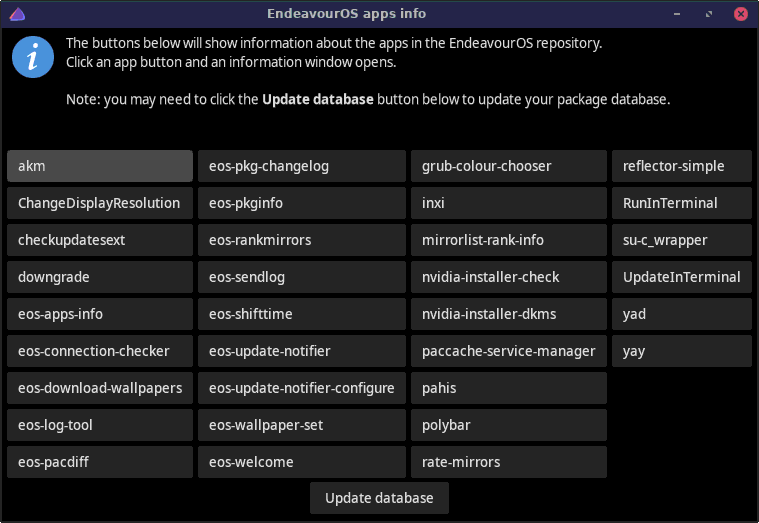

Shows information (resembles man pages) about the apps in the Endeavouros repository.

eos-apps-infoGlobal configuration file
/etc/eos-apps-info/eos-apps-info.conf currently has the
following variables available for configuration:
| Variable | Description |
|---|---|
| EOS_APPS_INFO_BROWSER | Web browser to use for viewing the manual
pages of the EndeavourOS repository apps. Default: xdg-open |
User may also use file
~/.config/eos-apps-info/eos-apps-info.conf to store
personal configuration. If this file exists, it will be used instead of
the global configuration file.